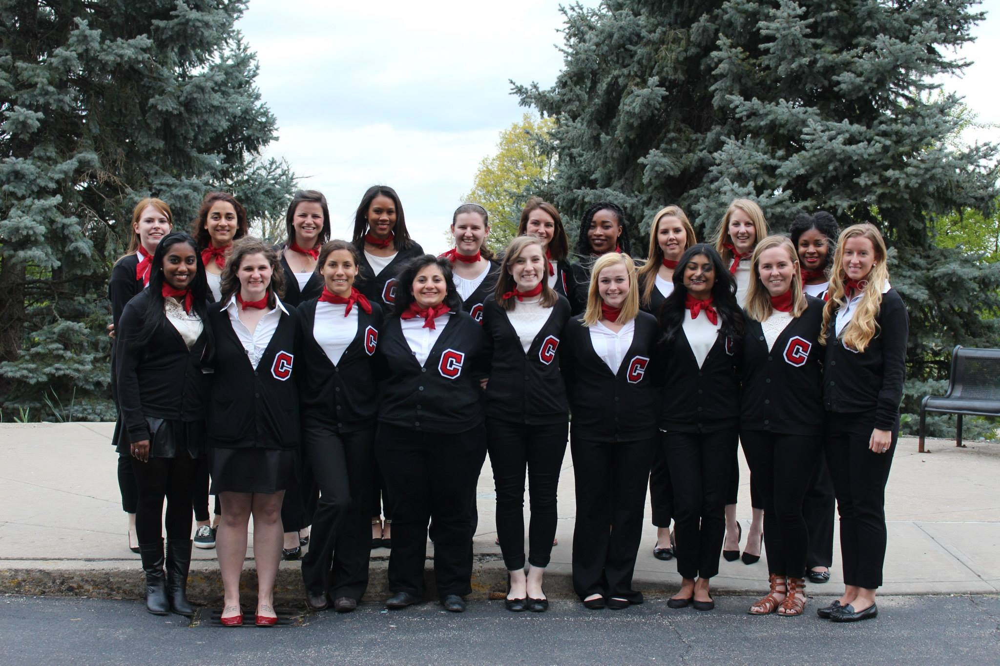
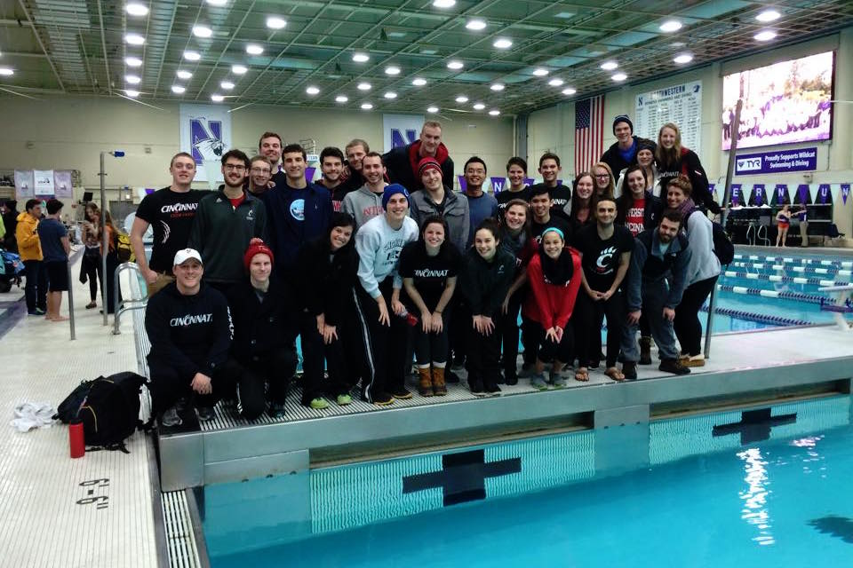

Melissa Lower
Attending the University of Cincinnati was the best decision I have ever made! I have completely fallen in love with the city of Cincinnati (even though I had lived here for almost 10 years prior to college!), and have received an amazing education.
 I am a member of the Lindner Honors PLUS program, a competitive business program in the Lindner College of Business. Through this program I have completed 6 co-ops/internships (that's 2+ years of work experience), studied abroad in Asia for 6 weeks, and learned how to drive toward success in the business world. Outside of class though, this program encourages us to be leaders on campus. I have carried this out in many ways, but most notably as a founding member, secretary, and eventually president of the UC Club Swim Team, a peer leader of an Emerging Women Leaders camp out of the Lindner Summer Institute, and as a president of CWEST, a Women's Honorary.